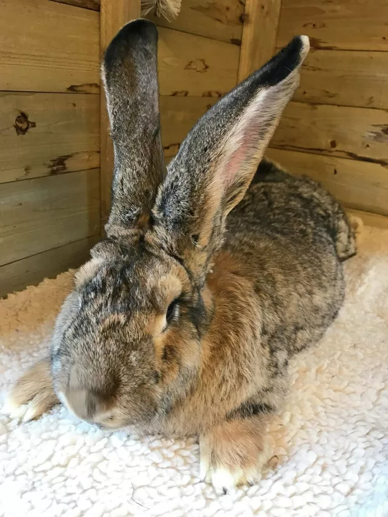

The biggest rabbit in the world has been kidnapped in the UK!
LONDON, April 13 - News. The largest rabbit in the world named Darius was kidnapped in the UK, the mistress offered a reward for his return in the amount of 1 thousand pounds (more than 1.3 thousand dollars), according to Sky News.
A rabbit named Darius entered the Guinness Book of Records as the largest in the world. The length of his body reaches 129 centimeters.

According to the channel, the rabbit lived with his owners in the English county of Worcestershire. According to the police, he was kidnapped from the enclosure on Sunday night. Rabbit owner Annette Edwards asked the kidnappers to return the pet and offered a reward. She also noted that the rabbit was already too old to produce offspring.